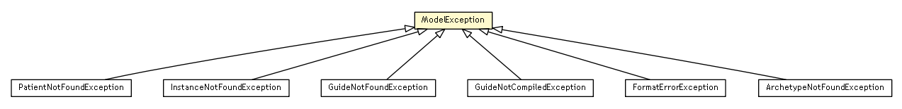

se.cambio.cds.util.exceptions
Class ModelException

java.lang.Object
 java.lang.Throwable
java.lang.Exception
se.cambio.cds.util.exceptions.ModelException
java.lang.Throwable
java.lang.Exception
se.cambio.cds.util.exceptions.ModelException
- All Implemented Interfaces:
- Serializable
- Direct Known Subclasses:
- ArchetypeNotFoundException, FormatErrorException, GuideNotCompiledException, GuideNotFoundException, InstanceNotFoundException, PatientNotFoundException
public abstract class ModelException
- extends Exception
The root exception of all exceptions in the "Model".
- See Also:
- Serialized Form
ModelException
protected ModelException()
ModelException
protected ModelException(String message)
getMessage
public String getMessage()
- Overrides:
getMessage in class Throwable
Copyright © 2013 Cambio. All Rights Reserved.